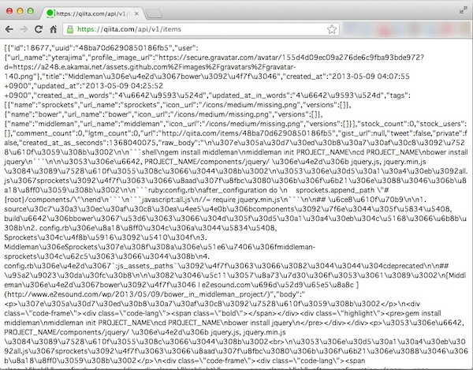
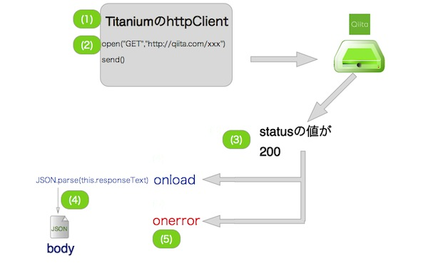
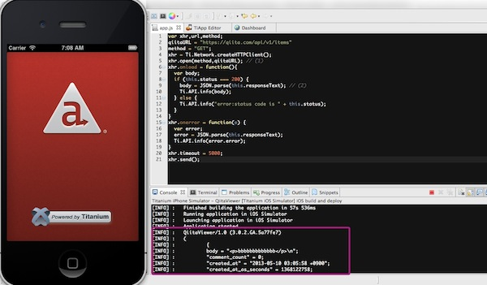
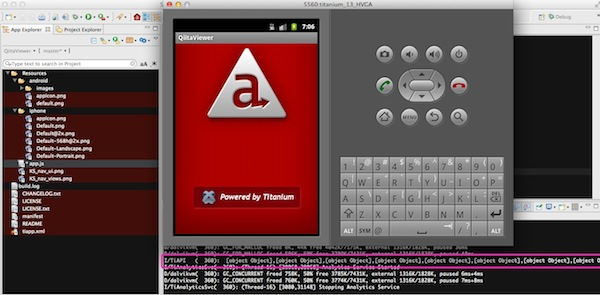

Titanium Mobileで実装をはじめる前に、Qiitaの投稿情報を取得する時のWebAPIについて簡単に説明します
QiitaのWebAPIは
https://qiita.com/api/v1/利用したいサービス別のディレクトリ
という形になってます。
Qiitaの開発者向けのドキュメントに利用したいサービス別のディレクトリ情報などがまとまってますが、ドキュメントの読み方について簡単に説明します
特定ユーザの情報取得の項では
GET /api/v1/users/:url_name
と記載されています
例えば、私のQiita上のユーザ情報（アカウント名はh5y1m141@github)を取得したい場合には :url_name の所を該当ユーザに置き換えることで情報が取得出来ます。
具体的には、以下URLにアクセスすることで私のQiita上のユーザ情報を取得することができます
https://qiita.com/api/v1/users/h5y1m141@github
{"id":10187,"url_name":"h5y1m141@github","profile_image_url":"https://secure.gravatar.com/avatar/4fdf95707fe9a33f3a1ba8c97315468c?d=https://a248.e.akamai.net/assets.github.com%2Fimages%2Fgravatars%2Fgravatar-user-420.png","url":"http://qiita.com/h5y1m141@github","description":"iPhone用のQiita Viewerアプリ作ってます\r\nhttps://github.com/h5y1m141/TiQiita","website_url":"http://h5y1m141.hatenablog.com/","organization":"","location":"","facebook":"","linkedin":"","twitter":null,"github":"h5y1m141","followers":7,"following_users":9,"items":1,"teams":[],"image_upload":{"limit":2097152,"used":0}}
実装する前にWebブラウザを使ってQiitaのWebAPIにアクセスして、どのような結果が取得できるのかを確認してみましょう。
Webブラウザを起動して以下URLにアクセスします
https://qiita.com/api/v1/items
以下はMac版のGoogle Chromeでアクセスした時の画面イメージになります。

QiitaのWebAPIの構造についておおまかに理解出来たかと思いますので、実際にQiitaの投稿情報を取得する処理を実装していきます。
Qiitaの投稿情報を取得するためにTitanium Mobileの 通信機能を使って実装します
var xhr,qiitaURL,method;
qiitaURL = "https://qiita.com/api/v1/items";
method = "GET";
xhr = Ti.Network.createHTTPClient(); // (1)
xhr.open(method,qiitaURL); // (2)
xhr.onload = function(){
var body;
if (this.status === 200) { // (3)
body = JSON.parse(this.responseText); // (4)
Ti.API.info(body);
} else {
Ti.API.info("error:status code is " + this.status);
}
}
xhr.onerror = function(e) { // (5)
var error;
error = JSON.parse(this.responseText);
Ti.API.info(error.error);
}
xhr.timeout = 5000;
xhr.send();
httpClientを利用するためのオブジェクトを生成します
open()メソッドを使ってQiitaのWebAPIにアクセスします。最初の引数にHTTPメソッドを指定しますが、Qiitaの投稿の取得をする場合には、GETメソッドを指定する必要があります（詳しくはQiitaのドキュメントを参照してください)次の引数で投稿情報を取得するQiitaのエンドポイントとなるURLを指定します。
QiitaのWebAPIにアクセスして、接続成功したかどうかを判定して、その後の処理を実施します。具体的にはthis.statusの値を確認して、値が200の場合には接続成功しているため該当する処理を実施します
this.responseTextの値を確認することで、サーバから取得できた値をテキスト形式で取得できます。this.responseTextは見た目はJSON形式になっていますが、そのまま変数に代入すると文字列としてその後処理されてしまうため、JSON.parse()を使って、JSON化した状態で変数に格納します
例えば、QiitaのWebAPIにアクセスして、150リクエスト/1時間というAPIの利用制限に引っかかってしまう場合などはエラーになり、その時にはonerrorイベントが呼び出されます。
イメージとしては以下のような対応関係になります

動作確認するために、buildした結果は以下のとおりです
iPhone起動時の画面キャプチャ

Android起動時の画面キャプチャ

この段階ではTitanium Mobileの通信機能を使ってデータ取得することを目的に実装しているため、シミュレーターの画面には何も標示されずコンソール上に複数の文字が表示されるかと思います。それが確認できればOKです